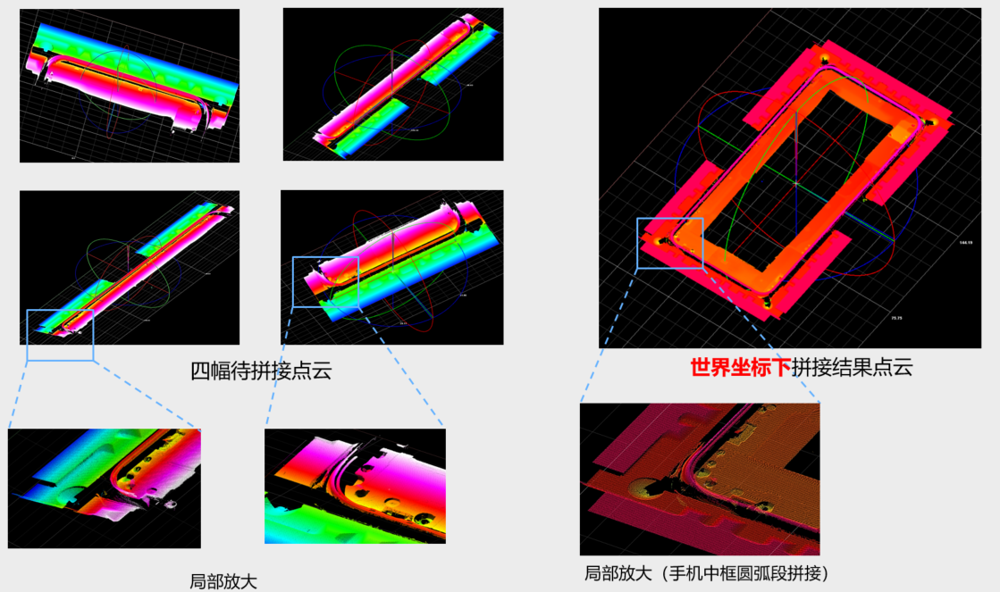
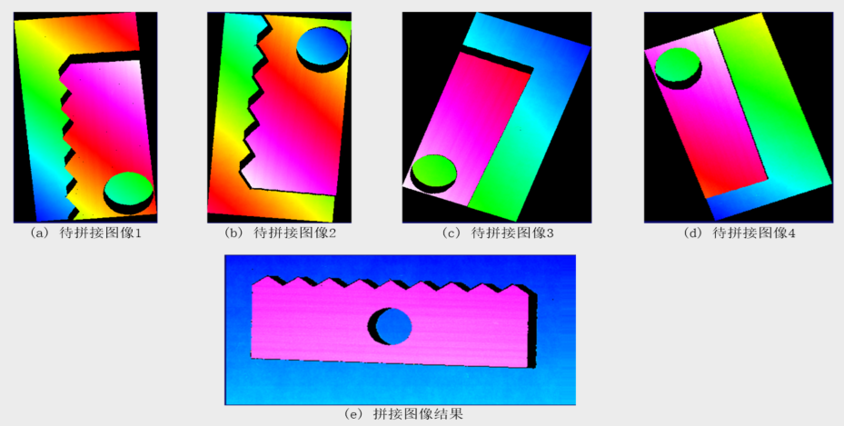
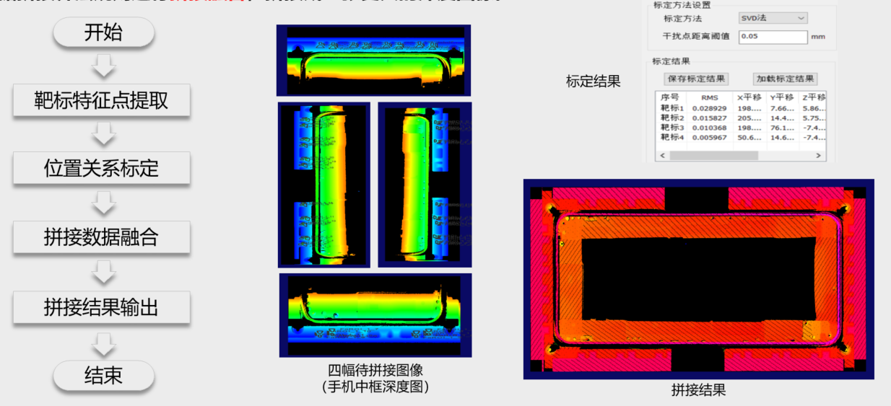
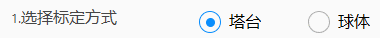
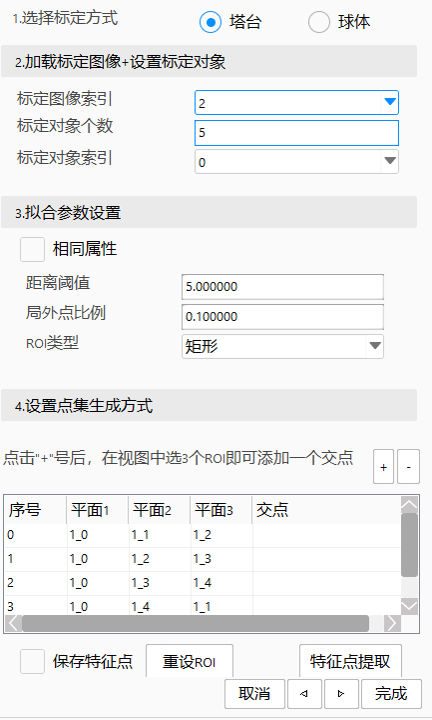
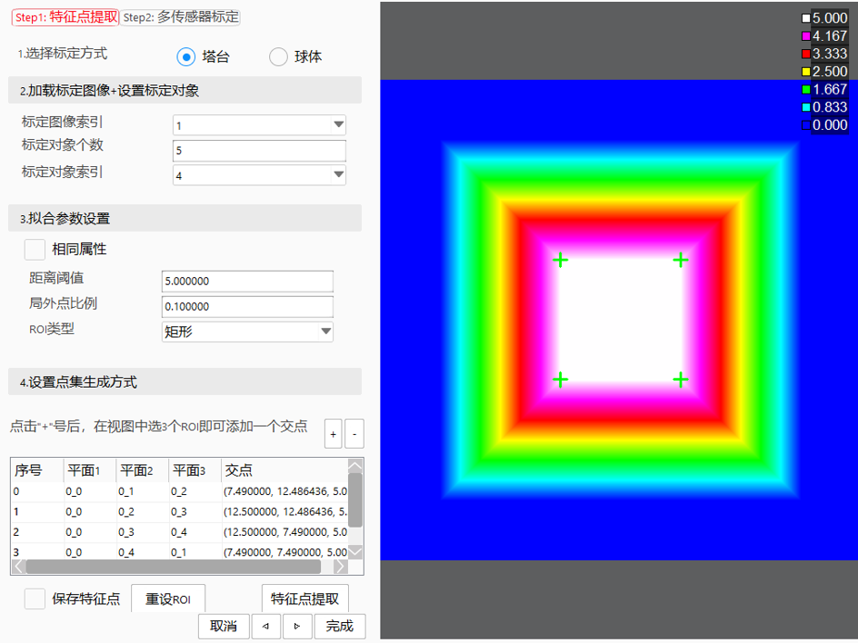
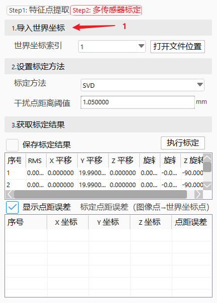
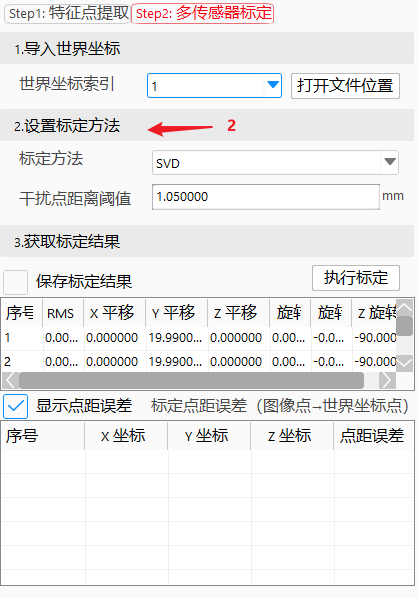
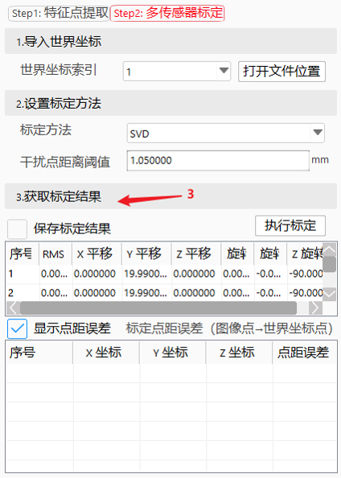
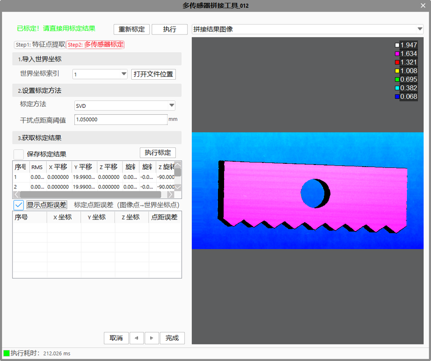

支持不同坐标系下深度图像的拼接。

在3D工程项目中，常常需要对待测量或检测物体进行良好的3D成像，以便于后续对拍摄物体进行3D测量和3D检测。但是目前市场上大部分的3D相机具有以下特点：1. 精度高，但相机视场相对较小； 2. 相机视场大，但精度相对较低。为了能够较低成本的实现高精度，大视场的3D成像，可利用多传感器拼接工具，对多张高精度的3D深度图像进行拼接操作。3D多传感器拼接的具体效果如下图所示。

首先通过特征点提取算法将靶标的特征点坐标提取出来，形成特征点点集；然后，利用全局标定算法，对特征点点集和参考点集之间的位置关系进行标定；最后，通过标定的位置关系，将多张深度图像的信息根据拼接算法规则进行拼接融合，拼接成一张更大的深度图像。


Step 1 选择标定方式
根据标定物，选择是塔台方式标定，还是球体拟合标定。
Step 2 加载标定图像，设置标定对象
根据靶标图像个数，选择对应的索引以及需要的ROI个数；

Step 3 拟合参数设置，设置点集生成方式
选择平面2拟合类型以及相应的拟合参数，在图像窗口点击需要拟合的ROI，单击添加到坐标列表中，比如需要3个ROI求交点，然后点击+按钮；添加完成后，点击特征点提取按钮，或者特征点提取结果。

Step 1 加载靶标世界坐标
有几幅靶标图像，就对应有几个靶标世界坐标，添加至列表中；

Step 2 设置标定方法
选取相应的标定方法和干扰点距离阈值；

Step 3 获取标定结果
执行标定，获取标定结果以及标定点距误差；

设置输出坐标系和拼接参数，执行得到拼接后的结果图像。

| 现象描述 | 解决方法 |
|---|---|
| 拼接失败 | 看标定结果是否正确 |
| 拼接效果不是想要的 | 调整重叠模式和插值方法 |
| 参数名称 | 参数说明 |
|---|---|
| 输入图像 | 显示待拼接的深度图像、靶标深度图像 |
| 拼接所需图像个数 | 待拼接的图像个数，目前最多支持16张图像拼接 |
| 是否完成标定 | 所有塔台图像都标定成功 |
| 是否已有标定结果文件 | 标定结果是否保存 |
| 标定结果文件路径 | 标定结果存储的路径 |
| 结果坐标系 | 分为世界坐标系和传感器坐标系 |
| 重叠模式 | 重叠模式用于处理一个像素位置处对应多个高度数据的情况。目前，重叠模式主要支持四种方式：最大值模式，最小值模式，优先级模式和图像中心模式等四种 |
| 插值方法 | 插值方法用于处理深度图像整数坐标像素映射的问题。目前提供最近邻法、线性插值法和权重法三种。最近邻方法具有速度快的特性，线性插值和权重法具有精度高的特性。 |
| 参数名称 | 参数说明 |
|---|---|
| 输出深度图像 | 输出拼接完成后的深度图像 |
| 交点 | 深度图像中的特征点 |
| 标定结果-旋转矩阵 | 刚性变换矩阵中的旋转矩阵 |
| 标的结果-平移矩阵 | 刚性变换矩阵中的平移矩阵 |
| 执行结果 | 工具执行结果，true/false |
| 执行时间 | 工具执行完所需的时间 |
1）测试环境：i7-8565U CPU 1.80GHz主频、16G内存的64位Win10操作系统。深度图像有效点数规模及耗时情况：
波动性指 (max-min)/mean
波动频次指 大于0.75*(max-min)+min的占比；
| 深度图大小 | 执行100次耗时 | 波动性 | |
|---|---|---|---|
| 200Wx4 | 400ms | 80% | 34% |
| 800Wx3 | 1000ms | 40% | 1% |
| 1000Wx4 | 2300ms | 30% | 16% |
2）拼接占用内存的计算方式：
【注】：多传感器拼接工具对使用场景没有特殊要求
参见“\Samples\3D\深度图\多传感器拼接工具.gvp”。